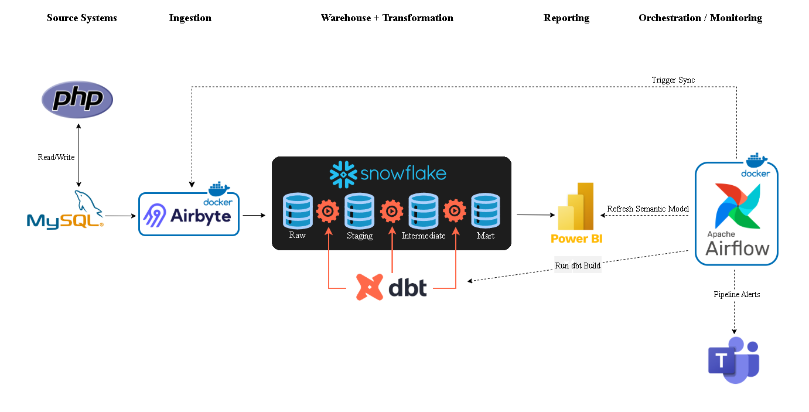
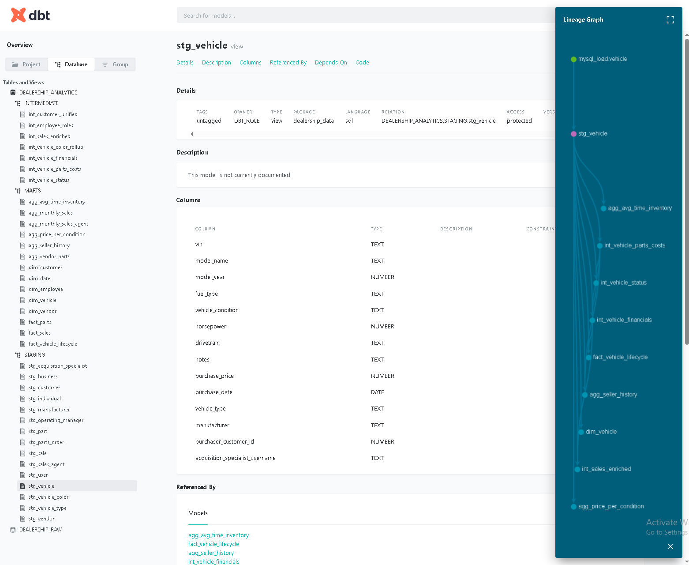
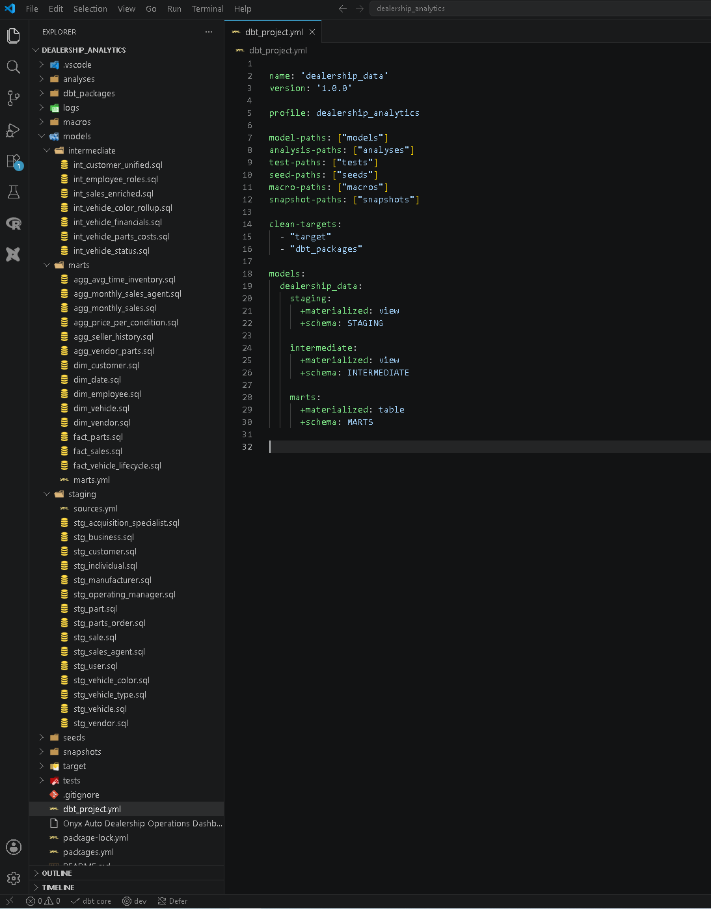
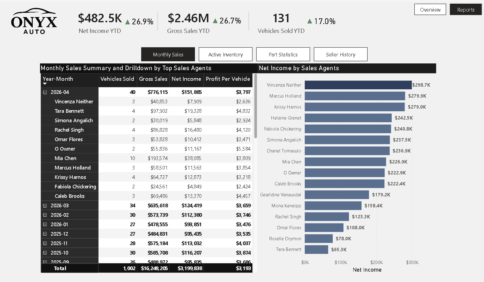
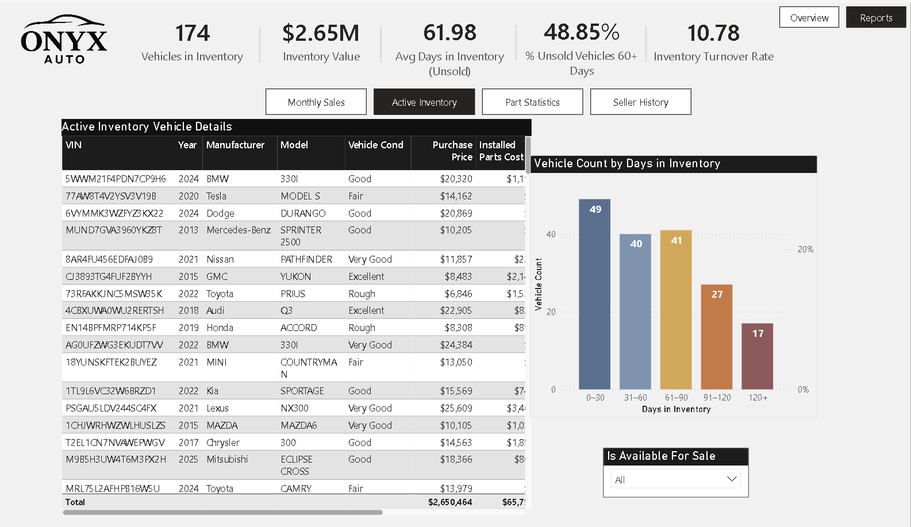
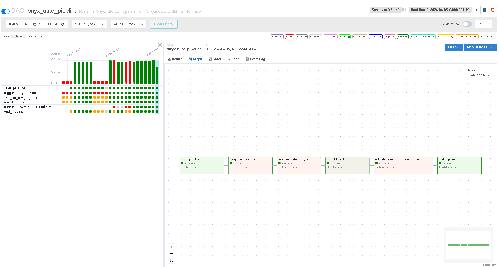
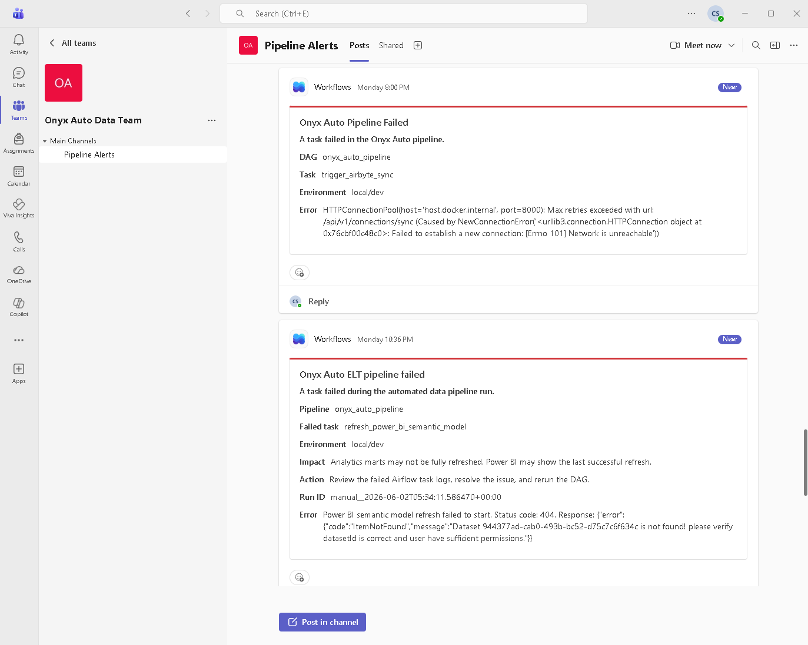

Onyx Auto: End-to-End Dealership BI & Analytics Platform
Onyx Auto is an end-to-end BI and analytics project that shows how a used car dealership can turn raw operational data into automated business reporting. The project starts with a PHP and MySQL source application that captures dealership activity. Airbyte ingests the operational data into Snowflake. dbt then models the data using a medallion architecture with staging, intermediate, and mart layers. Power BI pulls data from Snowflake to visualize dealership performance, and Apache Airflow orchestrates the daily refresh workflow.
Executive Summary
- Captured operational data and built an end-to-end analytics platform that turns the raw data into trusted reporting.
- Designed a pipeline that ingests, cleans, transforms, models, and orchestrates dealership data for analytics.
Business Problem
- Used car dealerships generate valuable data across multiple operational areas, including inventory, customers, sales, vendors, parts orders, and employees.
- Transactional databases are useful for daily operations but are not optimized for executive reporting or analytics.
- Business users need clean, structured reporting models to monitor performance, identify risks, and make faster operational decisions.
How much net income and gross sales income has the dealership generated?
Which vehicles are staying in inventory too long?
Which sales agents are driving monthly performance?
Which sellers are associated with higher downstream parts costs?
Solutions Architecture
The platform follows a source-to-dashboard analytics workflow. Dealership users enter operational records through a PHP frontend, and the data is stored in a MySQL transactional database. Airbyte then moves the source data into Snowflake, where dbt transforms the raw tables into clean reporting models across staging, intermediate, and mart layers. Power BI connects to the final mart layer for reporting, while Apache Airflow keeps the refresh process running in the right order.
- PHP frontend application captures operational records and stores them in a MySQL transactional database.
- Airbyte ingests raw MySQL data into a Snowflake analytical database.
- dbt transforms the raw data into analytics-ready tables through staging, intermediate, and mart layers.
- Power BI consumes the final mart layer for executive reporting.
- Apache Airflow orchestrates the refresh process and sends Microsoft Teams alerts when pipeline failures occur.

Transformation Layer
After Airbyte loads MySQL source data into Snowflake, dbt transforms the raw records into analytics-ready models. The transformation layer is organized into staging, intermediate, and mart schemas so data cleaning, reusable business logic, and final reporting outputs remain separated.
- Staging and intermediate models are materialized as views to keep early transformations lightweight.
- Mart models are materialized as tables to provide stable reporting datasets for Power BI.
- dbt tests validate key quality checks, including uniqueness, non-null values, and relationships.
- dbt documentation captures model definitions, field descriptions, and transformation logic.
- dbt lineage traces the flow of data, making dependencies easier to maintain and validate.
Standardizes raw source tables and prepares clean references for downstream logic.
Applies reusable business logic for customers, employee roles, vehicle status, financials, parts costs, and enriched sales.
Creates reporting-ready dimensions, facts, and aggregate models for dashboard consumption.
Documents models and validates important uniqueness, non-null, and relationship expectations.


Dashboard and Reporting Layer
The Power BI reporting layer connects to Snowflake mart tables and organizes dealership performance into the following reports:
- Executive reports track net income, gross sales income, vehicles sold, average profit per vehicle, average inventory age, and inventory value.
- Monthly sales reports support year-to-date performance and sales agent analysis.
- Inventory reports monitor vehicle aging, inventory value, and operational inventory health.
- Parts reports analyze parts spend and cost activity.
- Seller history reports support seller-level risk review.


Orchestration
Apache Airflow automates the Onyx Auto pipeline by coordinating ingestion, transformation, reporting refresh, and failure alerts. Instead of running each step manually, the workflow runs as a scheduled DAG with clear dependencies, making the project more production-like and easier to monitor.
- The workflow triggers the Airbyte sync between MySQL and Snowflake, then waits for ingestion to complete.
- After Airbyte syncs the source data, dbt rebuilds all its models.
- Power BI refreshes after the mart tables are updated, ensuring reports have the latest data.
- Microsoft Teams alerts notify users of any pipeline task failures.


Skills Demonstrated
- Built an end-to-end analytics pipeline that moves dealership data from a PHP/MySQL source system into Snowflake, dbt, Power BI, and Airflow.
- Modeled raw data into staging, intermediate, and mart layers.
- Added dbt tests, documentation, and lineage to improve data quality, transparency, and maintainability.
- Organized Snowflake into separate raw and analytics schemas to keep source data separate from analytics-ready data.
- Built Power BI reports from curated mart tables to track sales performance, inventory health, parts costs, and seller risk.
- Automated the refresh workflow with Apache Airflow and Microsoft Teams alerts for pipeline failure visibility.
Project Impact
Onyx Auto shows how dealership data can be turned into a reliable and scalable reporting workflow instead of remaining locked in transactional tables. The project improves visibility into key metrics and KPIs while making the reporting process automated and easy to maintain.
- Created an analytics workflow that connects operational data capture, warehouse modeling, dashboard reporting, and scheduled refreshes.
- Improved reporting readiness by turning normalized dealership records into structured models built for business analysis.
- Supported faster performance review through dashboards for executive KPIs, monthly sales, inventory health, parts activity, and seller history.
- Strengthened data trust with dbt tests, documentation, and lineage across the transformation layer.
- Reduced manual refresh effort by using Airflow to coordinate ingestion, transformation, Power BI refresh, and failure alerts.